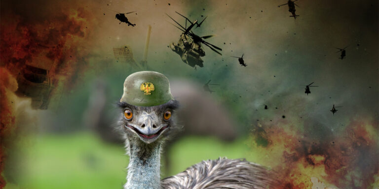

The Great Emu War that was lost by the Australians

Hope you checked my mad photo editing skills in the cover photo. Lets talk about the Emu War, the Wikipedia article is here. Yep, you have read it correctly, emu vs people.
The Emu War, also known as the Great Emu War, was a nuisance wildlife management military operation undertaken in Australia over the latter part of 1932 to address public concern over the number of emus said to be running amok in the Campion district of Western Australia.Blah blah blah, in a couple of words there where too many emus, people where angry. Angry people + many emus = emu slaughter. For those who don't know, emu looks like an ostrich with hairy neck. Here is a GIF for you.
The unsuccessful attempts to curb the population of emus [...] employed soldiers armed with Lewis guns
 This is a Lewis gun. Poor emus, now I pity them.
picture from Wikipedia
This is a Lewis gun. Poor emus, now I pity them.
picture from Wikipedia
.jpg){kind=link}
Following World War I, large numbers of ex-soldiers from Australia, along with a number of British veterans, were given land by the Australian government to take up farming within Western Australia, often in marginal areas.And then the emus came like this and started to fight them:
Colorized recording of that period, ferocious emu fighting a farm dog.
The 'war' was conducted under the command of Major G.P.W. Meredith of the Seventh Heavy Battery of the Royal Australian ArtillerySeems like the guys were pretty determined to eradicate that emu population. They even hired a Major for this job. Bad things Thanos wasn't there... One snap and the issue is solved.
[...] the local settlers attempted to herd the emus into an ambush, but the birds split into small groups and ran so that they were difficult to target.Damn these emus are smart... One day they'll even form they own country, called Emurica. Or maybe Emustralia? No, U.S.E. better, United States of Emus. It will have its own currency, Emuros. They'll provide free health care and studies, and won't be interested in oil & freedom.
Meredith had established an ambush near a local dam, and more than 1,000 emus were spotted heading towards their position.Here I feel like I should open a parenthesis and suggest that you read the section "The War" from the article, because that's the funniest thing I have read in my life. They describe this war with so many details, wondering why they did not teach about it in school?
By 8 November, six days after the first engagement, 2,500 rounds of ammunition had been fired. The number of birds killed is uncertain: one account estimates that it was 50 birds, but other accounts range from 200 to 500—the latter figure being provided by the settlers.This... this reminds me of some other guys that are also well known for their mad aiming skills
After the withdrawal of the military, the emu attacks on crops continued.Damn those emus are tough, they kept returning for the revenge.
Despite the problems encountered with the cull, the farmers of the region once again requested military assistance in 1934, 1943, and 1948, only to be turned down by the government.Instead, the bounty system that had been instigated in 1923 was continued, and this proved to be effective: 57,034 bounties were claimed over a six-month period in 1934.Giving bounty for killing emus? That's a damn smart decision. Wait... Wait... What's this crawling in my head? SPONTANEOUS PHOTO EDITING IDEA
 All in all, this war did not last for long and is considered to be won by emus, because their population did not change too much after the army got involved.
That's all for now folks! Hope you enjoyed reading it! Will go now to find other interesting articles for the next topics.
P.S. Here is a meme for you guys :)
All in all, this war did not last for long and is considered to be won by emus, because their population did not change too much after the army got involved.
That's all for now folks! Hope you enjoyed reading it! Will go now to find other interesting articles for the next topics.
P.S. Here is a meme for you guys :)